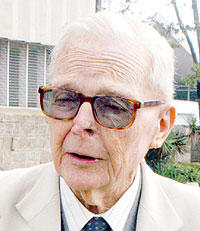

Tribute to Dr. Geoffrey W. Griffin
"This world is full of people who do their duty half-heartedly, grudgingly and poorly. Don't be like them. Whatever your duty is, do it as fully and as perfectly as you can." - Geoffrey Griffin.

Geoffrey William Griffin, OGH, MBS, OBE, the founding director of Starehe Boys' Centre and
School in
Kenya.
Life and times of Dr. Geoffrey William Griffins.
-
1993
- Geoffrey William Griffin was born in Eldoret to an English police officer who had come to serve in Kenya in 1919, and an English mother born in India. -
1943
- He attended the Nairobi School (then known as The Prince of Wales) for his high school education. -
1950
- He joined the civil service at the Survey of Kenya. -
1952
- Joined The Kenya Police Special Reserve and was later commissioned into the 3rd Kings African Rifles as second lieutenant. -
1953
- Disillusioned by the brutality of the battle, he refused to renew his commission after 14 months of service and left the force. -
1955
- Started work as a Commmunity Development Officer at Manyani Detention Camp. -
1959
- He started the Starehe Boys' Centre, a home for destitute children encompassing basic education. The school grew to be one of the best institutions in Africa, shaping it's students to be men and women of valor in the society. They proudly call themselves 'The Stareheians'. -
1962
- He became the local administrator of Save the Children Fund, which was also one of the main benefactors of Starehe. -
1964
- Established the National Youth Service (NYS) and served as the Director. -
1988
- Retired from the position of Director at the NYS after years of excellent service. -
2005
- He died on the 28th of June at the age of 72 years after a tough battle with colon cancer. He was buried inside the Starehe Boys' School Chapel.
Geoffrey Griffin is remembered by many as a philanthropist extraordinaire and a man whose legacy lives on in thousands of Stareheians, who follow in his footsteps to serve with diligence and honour. May his beautiful soul rest in peace.
Read more about his greatest legacy here. Also, he left a message for the Stareheians, please indulge these nuggets of wisdom.